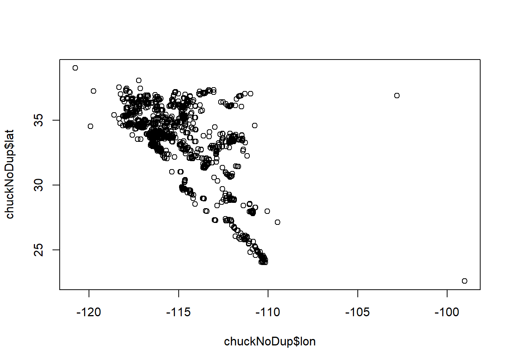
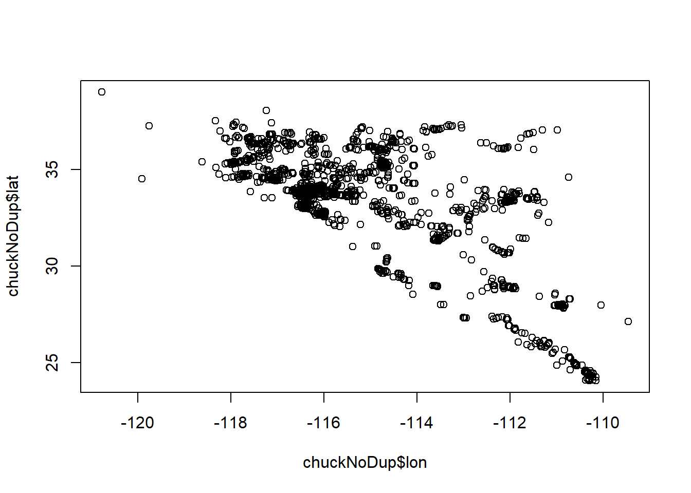

Species Distribution Modeling
Corey Mitchell & Lauren Phillips
11/4/19
NOTE: for those wishing to follow along with the R-based demo in class, click here for an R-script that contains all of the code blocks in this lecture.
What is it?
Also known as:
- Habitat Suitability Modeling
- Climate Envelope Modeling
- Niche Modeling (although not correct…(Kearney 2006))
Spatial models
- Correlative (SDM) vs. mechanistic (niche)
- Use species occurrences and environmental variables with a chosen algorithm to produce a map of potential habitat suitability and/or species distributions
Three components: (Franklin 2009)
1. Ecological Model - theory connecting species with landscape
2. Data Model - how data are collected, measured, cleaned
3. Statistical model - algorithm, calibration, validation, prediction What is it for?
IDENTIFY YOUR PURPOSE FIRST - affects all three components
- Predicting species invasions
- Predicting presence on the landscape in current vs. future conditions
- Identifying suitable habitat to conduct surveys for species of concern
- Identifying conservation hotspots
Assessing impacts of land use change for development or protection
When to use?
- When you have spatially referenced:
- Presence/detection data
- Presence/detection + absence/nondetection data
- Presence/detection data
Preprocessing
This is time consuming!
- Data acquisition
- Opensource: eBird, Herpnet
- Museum Records, Longterm monitoring data, and collaboration!
- Sampling design
- Sampling bias (likely)
- Extent delineation
- points + buffer
- Environmental variable acquisition
Conceptual Model Example
Workflow Example

Data Cleaning and Preparation
- Checking occurrences for inaccuracies
- spatial irregularities common!
Environmental Variable Preparation
- Formatting
- Same projection
- Same extent
- Resampling to same resolution
- CHECKING that the formatting doesn’t omit valuable information
- Collinearity
Data Cleaning and Preparation Part 2
- Pseudoabsence generation
- how many? what strategy?
- Addressing spatial autocorrelation
- Thinning occurrences if sampling uneven
- Dividing dataset into training and testing
Algorithms
- Selecting the best one for your dataset
- Singular vs. ensemble
- Presence-only vs. Presence/Absence
- Random Forest
- GAM
- ANN
- GLM
- SRE
- GBM
- MARS
- GARP
- MAXENT (an option, but not the only one.)
Forecast Habitat Suitability
- Generate prediction surface
- Scale 0-1
- You may choose to do this before or after looking at model performance metrics!
Model Selection/Evaluation
Performance Metrics
- Based on the testing dataset
- Set aside in beginning
- Threshold dependent vs. Independent
- AUC - ROC
- Closer to 1 is “better”, .5 is random
- .8 to 1 can be a red flag for overparameterization (Lobo et al 2008)
- TSS
- False positive and true positive rates
- Accuracy
- How often did it predict correctly?
- Others:
- Kappa, F, Correlation Coeff, Precision, Prevalence, Odds Ratio
- See Liu et al. 2011 for more information
Variable Importance
- Assess contribution of each variable to model + Decide which to keep or drop + If some relationships shock you, may indicate a formatting issue
- Response curves + Trends should make logical sense
Iterative Process
- Drop poorly performing algorithms
- Drop poorly performing variables
- Cry
- Re-run
- Re-assess
- Rinse
- Repeat
Let’s work through an example!
Species: Common Chuckwalla (Sauromalus ater)
Code adapted from Dr. Ken Nussear’s Species Habitat Modeling Course (Geog 701M)

Source: http://www.ndow.org/Species/Reptiles/Chuckwalla/
First install the necessary packages if you don’t already have them.
#install.packages(c("dismo","rgdal","raster","sp","ggmap","ggplot","mgcv","nlme","biomod2","gstat"))Obtain data from Global Biodiversity Information Facility, can directly import to r with the dismo package!
There was a species name change for chuckwalla at some point so we’ll import data for both ater and obesus.
library(dismo)## Loading required package: raster## Loading required package: spchuck1 <- gbif(genus = "Sauromalus", species = 'obesus', geo=T)## Loading required namespace: jsonlite## 1439 records found## 0-300-600-900-1200-1439 records downloadedchuck2 <- gbif(genus = "Sauromalus", species = 'ater', geo=T)## 5433 records found
## 0-300-600-900-1200-1500-1800-2100-2400-2700-3000-3300-3600-3900-4200-4500-4800-5100-5400-5433 records downloadedThe number of columns differ, need to identify which columns to keep so we can combine the data.
dim(chuck1)## [1] 1439 131dim(chuck2)## [1] 5433 159keepcols <- c('genus','specificEpithet','eventDate','lon','lat','elevation','geodeticDatum')
keepcols %in% names(chuck1)## [1] TRUE TRUE TRUE TRUE TRUE TRUE TRUEkeepcols %in% names(chuck2)## [1] TRUE TRUE TRUE TRUE TRUE TRUE TRUEallchck <- rbind(chuck1[,c(keepcols)], chuck2[,keepcols])
## Check out the data and remove any duplicates
chuckNoDup <- allchck[!duplicated(allchck),]Plot the data to look for erroneous points.
plot(chuckNoDup$lon, chuckNoDup$lat)
Remove points that don’t look correct.
chuckNoDup <- chuckNoDup[chuckNoDup$lon < -105,]
plot(chuckNoDup$lon, chuckNoDup$lat)
chuck.sp <- chuckNoDup
summary(chuck.sp$lat)## Min. 1st Qu. Median Mean 3rd Qu. Max. NA's
## 24.05 33.28 33.87 33.59 35.26 39.01 623summary(chuck.sp$lon)## Min. 1st Qu. Median Mean 3rd Qu. Max. NA's
## -120.8 -116.4 -115.9 -115.2 -114.4 -109.5 623Remove the NA’s
chuck.sp <- chuck.sp[!is.na(chuck.sp$lon),]Make it into a spatial points data frame by assigning coordinates and a projection.
coordinates(chuck.sp) <- c('lon','lat')
proj4string(chuck.sp) <- CRS('+proj=longlat + datum=WGS84')
plot(chuck.sp)Plot data over a basemap to check for other problems.
library(rgdal)## rgdal: version: 1.4-4, (SVN revision 833)
## Geospatial Data Abstraction Library extensions to R successfully loaded
## Loaded GDAL runtime: GDAL 2.2.3, released 2017/11/20
## Path to GDAL shared files: C:/Users/kshoemaker/Documents/R/win-library/3.6/rgdal/gdal
## GDAL binary built with GEOS: TRUE
## Loaded PROJ.4 runtime: Rel. 4.9.3, 15 August 2016, [PJ_VERSION: 493]
## Path to PROJ.4 shared files: C:/Users/kshoemaker/Documents/R/win-library/3.6/rgdal/proj
## Linking to sp version: 1.3-1library(sp)
e = extent(chuck.sp)
e## class : Extent
## xmin : -120.7708
## xmax : -109.4604
## ymin : 24.05
## ymax : 39.00934buf = .5
chuck.df<- as.data.frame(chuck.sp)
library(ggmap)## Loading required package: ggplot2## Google's Terms of Service: https://cloud.google.com/maps-platform/terms/.## Please cite ggmap if you use it! See citation("ggmap") for details.##
## Attaching package: 'ggmap'## The following object is masked from 'package:dismo':
##
## geocodemyMap <- get_stamenmap(bbox = c(left = e[1]-buf,
bottom = e[3] -buf,
right = e[2]+buf,
top = e[4] +buf),
maptype = "terrain",
crop = FALSE,
zoom = 6)## Source : http://tile.stamen.com/terrain/6/10/24.png## Source : http://tile.stamen.com/terrain/6/11/24.png## Source : http://tile.stamen.com/terrain/6/12/24.png## Source : http://tile.stamen.com/terrain/6/10/25.png## Source : http://tile.stamen.com/terrain/6/11/25.png## Source : http://tile.stamen.com/terrain/6/12/25.png## Source : http://tile.stamen.com/terrain/6/10/26.png## Source : http://tile.stamen.com/terrain/6/11/26.png## Source : http://tile.stamen.com/terrain/6/12/26.png## Source : http://tile.stamen.com/terrain/6/10/27.png## Source : http://tile.stamen.com/terrain/6/11/27.png## Source : http://tile.stamen.com/terrain/6/12/27.png# plot map
ggmap(myMap) + geom_point(aes(x = lon, y = lat), data = chuck.df, alpha = .5)
A little more cleanup is needed. Remove points west of longitude -119
chuck.sp <- chuck.sp[coordinates(chuck.sp)[,1] > -119,]
chuck.df <- as.data.frame(chuck.sp)
ggmap(myMap) + geom_point(aes(x = lon, y = lat), data = chuck.df, alpha = .5)Now let’s get our Environmental Layers in order. Decide which variables are important to your species “apriori”. Do NOT just use all 20 Bioclim layers and see which stick.
library(raster)
library(sp)
blk.dens <- raster("ofr20091102 Environmental Layers/BlkDensity.asc") # Bulk density (soil)
pct.cov <-raster("ofr20091102 Environmental Layers/pctCov.asc") #% Shrub cover
pct.rock <-raster("ofr20091102 Environmental Layers/pctRocks.asc") #% rocks
pct.rough <-raster("ofr20091102 Environmental Layers/pctRuf.asc") #% roughness
slope <-raster("ofr20091102 Environmental Layers/slope.asc") #slope
s.precip <- raster("ofr20091102 Environmental Layers/sp30.asc") #summer precip
w.precip <- raster("ofr20091102 Environmental Layers/wp30.asc") #winter precipStack your environmental variables. They must be at the same extent, resolution, and projection to stack. This may require significant formatting (cropping, masking, spatial transformation, resampling, etc…).
env <- stack(blk.dens, pct.cov, pct.rock, pct.rough, slope, s.precip, w.precip)Plot your Environmental Variables to check them! You may decide to drop addtional variable prior to first model.
par(mfrow=c(1,1))
plot(env[[5]], main= "Slope")
Now we mask our points to the environmental data! But first we need to reproject our chuck points to the same projection as the environmental data because they are different.
proj4string(chuck.sp)## [1] "+proj=longlat +ellps=WGS84"proj4string(env)## [1] "+proj=utm +zone=11 +datum=NAD83 +units=m +no_defs +ellps=GRS80 +towgs84=0,0,0"chuck.sp.utm <- spTransform(chuck.sp, CRS(proj4string(env)))
chuck.sp.utm$keep<- extract(env[['pctRocks']], chuck.sp.utm)
summary(chuck.sp.utm$keep) ## Min. 1st Qu. Median Mean 3rd Qu. Max. NA's
## 0.0000 0.0000 0.0000 0.9635 1.1400 26.2500 608chuck.sp.utm <- chuck.sp.utm[!is.na(chuck.sp.utm$keep),] ### remove the points outside of your env extent
chuck.sp.utm$Chuckwalla = 1 # create a presence column
chuck.sp.utm <- chuck.sp.utm[,'Chuckwalla'] # drop all other columnsPlot the points over the environmental layers
plot(env[['pctRocks']], main = "Percent Rocks")
points(chuck.sp.utm, pch = 19)The algorithms we are interested in fitting do not work with presence-only data. Because we do not have “absence” data, we need to generate pseudoabsences. Luckily, you can use biomod2 to generate them.
library(biomod2)## Loading required package: parallel## Loading required package: reshape## biomod2 3.3-7.1 loaded.
##
## Type browseVignettes(package='biomod2') to access directly biomod2 vignettes.##
## Attaching package: 'biomod2'## The following object is masked from 'package:dismo':
##
## evaluateset.seed(24)
chuck.sp.utm.pa <- BIOMOD_FormatingData(resp.var = chuck.sp.utm$Chuckwalla,
expl.var = env,
resp.xy = coordinates(chuck.sp.utm),
resp.name = 'Chuckwalla',
#eval.resp.var = chuck.sp.utm.ex.tst$Chuckwalla,
#eval.expl.var = env,
#eval.resp.xy = coordinates(chuck.sp.utm.ex.tst),
PA.nb.rep = 1,
PA.nb.absences = dim(chuck.sp.utm)[1],
PA.strategy = 'sre',
PA.dist.min = NULL, # for 'disk' strategy
PA.dist.max = NULL, # for 'disk' strategy
PA.sre.quant = 0.1,
PA.table = NULL,
na.rm = TRUE)##
## -=-=-=-=-=-=-=-=-=-=-=-= Chuckwalla Data Formating -=-=-=-=-=-=-=-=-=-=-=-=
##
## ! No data has been set aside for modeling evaluation
## > Pseudo Absences Selection checkings...
## > SRE pseudo absences selection
## -=-=-=-=-=-=-=-=-=-=-=-=-=-=-=-=-= Done -=-=-=-=-=-=-=-=-=-=-=-=-=-=-=-=-= chuck.sp.utm.pa##
## -=-=-=-=-=-=-=-=-=-=-=-= 'BIOMOD.formated.data.PA' -=-=-=-=-=-=-=-=-=-=-=-=
##
## sp.name = Chuckwalla
##
## 1878 presences, 0 true absences and 1878 undifined points in dataset
##
##
## 7 explanatory variables
##
## BlkDensity pctCov pctRocks pctRuf
## Min. :0.000 Min. : 22.61 Min. : 0.000 Min. :0.0000
## 1st Qu.:1.390 1st Qu.:108.29 1st Qu.: 0.000 1st Qu.:0.0000
## Median :1.490 Median :115.62 Median : 0.000 Median :0.0000
## Mean :1.453 Mean :118.81 Mean : 1.229 Mean :0.1072
## 3rd Qu.:1.600 3rd Qu.:125.37 3rd Qu.: 1.140 3rd Qu.:0.1166
## Max. :1.680 Max. :197.07 Max. :26.250 Max. :1.0000
## slope sp30 wp30
## Min. : 0.000 Min. : 0.00 Min. : 0.00
## 1st Qu.: 1.692 1st Qu.: 44.00 1st Qu.: 83.01
## Median : 5.555 Median : 64.00 Median :118.12
## Mean :10.189 Mean : 70.61 Mean :129.93
## 3rd Qu.:16.644 3rd Qu.: 92.00 3rd Qu.:163.78
## Max. :59.053 Max. :193.00 Max. :600.39
##
##
## 1 Pseudo Absences dataset available ( PA1 ) with 1878
## absences in each (true abs + pseudo abs)
##
## -=-=-=-=-=-=-=-=-=-=-=-=-=-=-=-=-=-=-=-=-=-=-=-=-=-=-=-=-=-=-=-=-=-=-=-=-=-=There are four strategies for selecting PAs. For SRE (surface range envelope), PAs are selected in conditions that differ from a defined proportion (PA.sre.quant) of the presence data. It forces PAs to be selected outside of the broadly defined environemental conditions for the species.
Check headers to find where presences and PAs are being stored
dim(chuck.sp.utm)## [1] 1878 1str(chuck.sp.utm.pa) ## Formal class 'BIOMOD.formated.data.PA' [package "biomod2"] with 11 slots
## ..@ PA.strategy : chr "sre"
## ..@ PA :'data.frame': 3756 obs. of 1 variable:
## .. ..$ PA1: logi [1:3756] TRUE TRUE TRUE TRUE TRUE TRUE ...
## ..@ sp.name : chr "Chuckwalla"
## ..@ coord :'data.frame': 3756 obs. of 2 variables:
## .. ..$ lon: num [1:3756] 677087 659983 660994 659862 651912 ...
## .. ..$ lat: num [1:3756] 4035356 4110658 4115077 4110662 4073863 ...
## ..@ data.species : num [1:3756] 1 1 1 1 1 1 1 1 1 1 ...
## ..@ data.env.var :'data.frame': 3756 obs. of 7 variables:
## .. ..$ BlkDensity: num [1:3756] 1.43 1.43 1.4 1.43 1.49 ...
## .. ..$ pctCov : num [1:3756] 117 116 116 116 124 ...
## .. ..$ pctRocks : num [1:3756] 0 1.5 1.5 1.5 0 1.5 1.5 0 0 1.5 ...
## .. ..$ pctRuf : num [1:3756] 0 0 0 0 0 ...
## .. ..$ slope : num [1:3756] 10.09 2.66 6.79 2.66 1.98 ...
## .. ..$ sp30 : num [1:3756] 79 84 90 84 90 86 87 72 84 93 ...
## .. ..$ wp30 : num [1:3756] 109 100 116 100 133 ...
## ..@ data.mask :Formal class 'RasterStack' [package "raster"] with 11 slots
## .. .. ..@ filename: chr ""
## .. .. ..@ layers :List of 2
## .. .. .. ..$ :Formal class 'RasterLayer' [package "raster"] with 12 slots
## .. .. .. .. .. ..@ file :Formal class '.RasterFile' [package "raster"] with 13 slots
## .. .. .. .. .. .. .. ..@ name : chr ""
## .. .. .. .. .. .. .. ..@ datanotation: chr "FLT4S"
## .. .. .. .. .. .. .. ..@ byteorder : chr "little"
## .. .. .. .. .. .. .. ..@ nodatavalue : num -Inf
## .. .. .. .. .. .. .. ..@ NAchanged : logi TRUE
## .. .. .. .. .. .. .. ..@ nbands : int 1
## .. .. .. .. .. .. .. ..@ bandorder : chr "BIL"
## .. .. .. .. .. .. .. ..@ offset : int 0
## .. .. .. .. .. .. .. ..@ toptobottom : logi TRUE
## .. .. .. .. .. .. .. ..@ blockrows : int 0
## .. .. .. .. .. .. .. ..@ blockcols : int 0
## .. .. .. .. .. .. .. ..@ driver : chr ""
## .. .. .. .. .. .. .. ..@ open : logi FALSE
## .. .. .. .. .. ..@ data :Formal class '.SingleLayerData' [package "raster"] with 13 slots
## .. .. .. .. .. .. .. ..@ values : num [1:412614] NA NA NA NA NA NA NA NA NA NA ...
## .. .. .. .. .. .. .. ..@ offset : num 0
## .. .. .. .. .. .. .. ..@ gain : num 1
## .. .. .. .. .. .. .. ..@ inmemory : logi TRUE
## .. .. .. .. .. .. .. ..@ fromdisk : logi FALSE
## .. .. .. .. .. .. .. ..@ isfactor : logi FALSE
## .. .. .. .. .. .. .. ..@ attributes: list()
## .. .. .. .. .. .. .. ..@ haveminmax: logi TRUE
## .. .. .. .. .. .. .. ..@ min : num -1
## .. .. .. .. .. .. .. ..@ max : num 1
## .. .. .. .. .. .. .. ..@ band : int 1
## .. .. .. .. .. .. .. ..@ unit : chr ""
## .. .. .. .. .. .. .. ..@ names : chr "input_data"
## .. .. .. .. .. ..@ legend :Formal class '.RasterLegend' [package "raster"] with 5 slots
## .. .. .. .. .. .. .. ..@ type : chr(0)
## .. .. .. .. .. .. .. ..@ values : logi(0)
## .. .. .. .. .. .. .. ..@ color : logi(0)
## .. .. .. .. .. .. .. ..@ names : logi(0)
## .. .. .. .. .. .. .. ..@ colortable: logi(0)
## .. .. .. .. .. ..@ title : chr(0)
## .. .. .. .. .. ..@ extent :Formal class 'Extent' [package "raster"] with 4 slots
## .. .. .. .. .. .. .. ..@ xmin: num 314026
## .. .. .. .. .. .. .. ..@ xmax: num 879976
## .. .. .. .. .. .. .. ..@ ymin: num 3594743
## .. .. .. .. .. .. .. ..@ ymax: num 4323678
## .. .. .. .. .. ..@ rotated : logi FALSE
## .. .. .. .. .. ..@ rotation:Formal class '.Rotation' [package "raster"] with 2 slots
## .. .. .. .. .. .. .. ..@ geotrans: num(0)
## .. .. .. .. .. .. .. ..@ transfun:function ()
## .. .. .. .. .. ..@ ncols : int 566
## .. .. .. .. .. ..@ nrows : int 729
## .. .. .. .. .. ..@ crs :Formal class 'CRS' [package "sp"] with 1 slot
## .. .. .. .. .. .. .. ..@ projargs: chr "+proj=utm +zone=11 +datum=NAD83 +units=m +no_defs +ellps=GRS80 +towgs84=0,0,0"
## .. .. .. .. .. ..@ history : list()
## .. .. .. .. .. ..@ z : list()
## .. .. .. ..$ :Formal class 'RasterLayer' [package "raster"] with 12 slots
## .. .. .. .. .. ..@ file :Formal class '.RasterFile' [package "raster"] with 13 slots
## .. .. .. .. .. .. .. ..@ name : chr ""
## .. .. .. .. .. .. .. ..@ datanotation: chr "FLT4S"
## .. .. .. .. .. .. .. ..@ byteorder : chr "little"
## .. .. .. .. .. .. .. ..@ nodatavalue : num -Inf
## .. .. .. .. .. .. .. ..@ NAchanged : logi FALSE
## .. .. .. .. .. .. .. ..@ nbands : int 1
## .. .. .. .. .. .. .. ..@ bandorder : chr "BIL"
## .. .. .. .. .. .. .. ..@ offset : int 0
## .. .. .. .. .. .. .. ..@ toptobottom : logi TRUE
## .. .. .. .. .. .. .. ..@ blockrows : int 1
## .. .. .. .. .. .. .. ..@ blockcols : int 566
## .. .. .. .. .. .. .. ..@ driver : chr ""
## .. .. .. .. .. .. .. ..@ open : logi FALSE
## .. .. .. .. .. ..@ data :Formal class '.SingleLayerData' [package "raster"] with 13 slots
## .. .. .. .. .. .. .. ..@ values : num [1:412614] NA NA NA NA NA NA NA NA NA NA ...
## .. .. .. .. .. .. .. ..@ offset : num 0
## .. .. .. .. .. .. .. ..@ gain : num 1
## .. .. .. .. .. .. .. ..@ inmemory : logi TRUE
## .. .. .. .. .. .. .. ..@ fromdisk : logi FALSE
## .. .. .. .. .. .. .. ..@ isfactor : logi FALSE
## .. .. .. .. .. .. .. ..@ attributes: list()
## .. .. .. .. .. .. .. ..@ haveminmax: logi TRUE
## .. .. .. .. .. .. .. ..@ min : num -1
## .. .. .. .. .. .. .. ..@ max : num 1
## .. .. .. .. .. .. .. ..@ band : int 1
## .. .. .. .. .. .. .. ..@ unit : chr ""
## .. .. .. .. .. .. .. ..@ names : chr "PA1"
## .. .. .. .. .. ..@ legend :Formal class '.RasterLegend' [package "raster"] with 5 slots
## .. .. .. .. .. .. .. ..@ type : chr(0)
## .. .. .. .. .. .. .. ..@ values : logi(0)
## .. .. .. .. .. .. .. ..@ color : logi(0)
## .. .. .. .. .. .. .. ..@ names : logi(0)
## .. .. .. .. .. .. .. ..@ colortable: logi(0)
## .. .. .. .. .. ..@ title : chr(0)
## .. .. .. .. .. ..@ extent :Formal class 'Extent' [package "raster"] with 4 slots
## .. .. .. .. .. .. .. ..@ xmin: num 314026
## .. .. .. .. .. .. .. ..@ xmax: num 879976
## .. .. .. .. .. .. .. ..@ ymin: num 3594743
## .. .. .. .. .. .. .. ..@ ymax: num 4323678
## .. .. .. .. .. ..@ rotated : logi FALSE
## .. .. .. .. .. ..@ rotation:Formal class '.Rotation' [package "raster"] with 2 slots
## .. .. .. .. .. .. .. ..@ geotrans: num(0)
## .. .. .. .. .. .. .. ..@ transfun:function ()
## .. .. .. .. .. ..@ ncols : int 566
## .. .. .. .. .. ..@ nrows : int 729
## .. .. .. .. .. ..@ crs :Formal class 'CRS' [package "sp"] with 1 slot
## .. .. .. .. .. .. .. ..@ projargs: chr "+proj=utm +zone=11 +datum=NAD83 +units=m +no_defs +ellps=GRS80 +towgs84=0,0,0"
## .. .. .. .. .. ..@ history : list()
## .. .. .. .. .. ..@ z : list()
## .. .. ..@ title : chr(0)
## .. .. ..@ extent :Formal class 'Extent' [package "raster"] with 4 slots
## .. .. .. .. ..@ xmin: num 314026
## .. .. .. .. ..@ xmax: num 879976
## .. .. .. .. ..@ ymin: num 3594743
## .. .. .. .. ..@ ymax: num 4323678
## .. .. ..@ rotated : logi FALSE
## .. .. ..@ rotation:Formal class '.Rotation' [package "raster"] with 2 slots
## .. .. .. .. ..@ geotrans: num(0)
## .. .. .. .. ..@ transfun:function ()
## .. .. ..@ ncols : int 566
## .. .. ..@ nrows : int 729
## .. .. ..@ crs :Formal class 'CRS' [package "sp"] with 1 slot
## .. .. .. .. ..@ projargs: chr "+proj=utm +zone=11 +datum=NAD83 +units=m +no_defs +ellps=GRS80 +towgs84=0,0,0"
## .. .. ..@ history : list()
## .. .. ..@ z : list()
## ..@ has.data.eval : logi FALSE
## ..@ eval.coord :'data.frame': 0 obs. of 0 variables
## Formal class 'data.frame' [package "methods"] with 4 slots
## .. .. ..@ .Data : list()
## .. .. ..@ names : chr(0)
## .. .. ..@ row.names: int(0)
## .. .. ..@ .S3Class : chr "data.frame"
## ..@ eval.data.species: num(0)
## ..@ eval.data.env.var:'data.frame': 0 obs. of 0 variables
## Formal class 'data.frame' [package "methods"] with 4 slots
## .. .. ..@ .Data : list()
## .. .. ..@ names : chr(0)
## .. .. ..@ row.names: int(0)
## .. .. ..@ .S3Class : chr "data.frame"summary(chuck.sp.utm.pa@data.species)## Min. 1st Qu. Median Mean 3rd Qu. Max. NA's
## 1 1 1 1 1 1 1878Grab the PA data from the formatted dataset
chuck.sp.all <- SpatialPointsDataFrame(coords = chuck.sp.utm.pa@coord, data = data.frame(Chuckwalla = chuck.sp.utm.pa@data.species), proj = CRS(proj4string(chuck.sp.utm)))Replace the NA from the PA data with 0 to feed into next data selection
chuck.sp.all$Chuckwalla[is.na(chuck.sp.all$Chuckwalla)] <- 0
chuck.sp.all## class : SpatialPointsDataFrame
## features : 3756
## extent : 317525.5, 874476.3, 3601242, 4323178 (xmin, xmax, ymin, ymax)
## crs : +proj=utm +zone=11 +datum=NAD83 +units=m +no_defs +ellps=GRS80 +towgs84=0,0,0
## variables : 1
## names : Chuckwalla
## min values : 0
## max values : 1Check the Observations and PAs on a plot.
plot(env[[3]])
points(chuck.sp.all, col='red')
points(chuck.sp.utm, col='black')Now we create training and ‘Evaluation’ sets. Start by checking how many records you have after the initial cleaning. Then, decide what percent of the data you want to use for training and testing.
howmanychucks <- dim(chuck.sp.all)[1]/2
## 70 % of those
pct70 <- round(howmanychucks * 0.7)Now split the presence data from PAs.
chuck.sp.Pres <- chuck.sp.all[chuck.sp.all$Chuckwalla == 1,]
chuck.sp.Pa <- chuck.sp.all[chuck.sp.all$Chuckwalla == 0,]Sample 70% from the whole length withouth replacement.
trnchuckrows <- sample(1:howmanychucks, size = pct70, replace = F)Grab Presence and PA data to assign to training and testing sets.
## select those rows
chuck.sp.Pres.trn <- chuck.sp.Pres[trnchuckrows,'Chuckwalla']
chuck.sp.Pa.trn <- chuck.sp.Pa[trnchuckrows,'Chuckwalla']
## select the opposite for testing
chuck.sp.Pres.tst <- chuck.sp.Pres[-trnchuckrows,'Chuckwalla']
chuck.sp.Pa.tst <- chuck.sp.Pa[-trnchuckrows,'Chuckwalla']
## Combine rows ####
chuck.sp.trn <- rbind(chuck.sp.Pres.trn, chuck.sp.Pa.trn)
chuck.sp.tst <- rbind(chuck.sp.Pres.tst, chuck.sp.Pa.tst)Check training and testing dataset on maps.
plot(env[['sp30']], main = " Summer Precipitation: Training Data")
points(chuck.sp.trn[chuck.sp.trn$Chuckwalla == 1,], pch=19)
points(chuck.sp.trn[chuck.sp.trn$Chuckwalla == 0,], pch=24, col='red')plot(env[['sp30']], main = " Summer Precipitation: Testing Data")
points(chuck.sp.tst[chuck.sp.tst$Chuckwalla == 1,], pch=19)
points(chuck.sp.tst[chuck.sp.tst$Chuckwalla == 0,], pch=24, col='red')Before we can start modeling, we need to check our data for spatial autocorrelation. We do this by creating variograms and then thinning the data.
library(gstat)## Registered S3 method overwritten by 'xts':
## method from
## as.zoo.xts zooc.variog <- variogram(Chuckwalla ~1, chuck.sp.trn, xlab= "Distance (m)", ylab="Semivariance")## Warning in variogram.default(y, locations, X, trend.beta = beta, grid =
## grid, : the following arguments are ignored: Distance (m), Semivarianceplot(c.variog) #check training data for SA (it there)
c.variog2 <- variogram(Chuckwalla ~1, chuck.sp.tst, xlab= "Distance (m)", ylab="Semivariance")## Warning in variogram.default(y, locations, X, trend.beta = beta, grid =
## grid, : the following arguments are ignored: Distance (m), Semivarianceplot(c.variog2) #check testing data for SA (it there)### Zooming in a bit to focus on local effects
c.variog3 <- variogram(Chuckwalla ~1, chuck.sp.trn,cutoff = 50000)
c.variog3.f <- fit.variogram(c.variog3, vgm(psill = 0.1, "Sph", range = 25000, nugget = 0))
plot(c.variog3, model = c.variog3.f)Now we need to thin the dataset to reduce our Spatial Autocorrelation, which is due to strong sampling/collecting bias. We start by making a grid.
## Lets make a quick grid for sampling
minx <- min(bbox(chuck.sp.utm)[1,])
maxx <- max(bbox(chuck.sp.utm)[1,])
miny <- min(bbox(chuck.sp.utm)[2,])
maxy <- max(bbox(chuck.sp.utm)[2,])
sidel <- 35000 # determines grid spacing (based on where SA tapers off)
proj <- CRS(proj4string(chuck.sp.utm))
x <- seq(from = minx, to = maxx, by = sidel) ## sequence of x centroids
y <- seq(from = miny, to = maxy, by = sidel) ## sequence of y for centroidsCreate a grid of all pairs of coordinates (as a data.frame) using the “expand grid” function and then make it a gridded object.
xy <- expand.grid(x = x, y = y)
grid.pts<-SpatialPointsDataFrame(coords= xy,data = data.frame(id = 1:dim(xy)[1]), proj4string = proj)
plot(grid.pts)gridded(grid.pts) <- TRUE
grid <- as(grid.pts, "SpatialPolygons")Plot for inspection if needed
plot(grid)
points(grid.pts, col='red')Now convert it to an SPDF and trasform it to the projection of your data.
gridspdf <- SpatialPolygonsDataFrame(grid, data=data.frame(id=row.names(grid), row.names=row.names(grid), values = rep(1,length(grid))))
names.grd<-sapply
proj4string(gridspdf)## [1] "+proj=utm +zone=11 +datum=NAD83 +units=m +no_defs +ellps=GRS80 +towgs84=0,0,0"gridspdf <- spTransform(gridspdf, proj)
plot(gridspdf)
points(chuck.sp.utm, col='red')Subsample your grid to drop the squares you don’t need.
getgrid <- over(gridspdf, chuck.sp.utm)
head(getgrid)## Chuckwalla
## g256 NA
## g257 NA
## g258 NA
## g259 NA
## g260 NA
## g261 NAgrids2.occ <- gridspdf[!is.na(getgrid$Chuckwalla),]
plot(grids2.occ)
points(chuck.sp.utm, col='red')Thin the data down to 5 Chuckwallas per grid-space. Note: this is really heavy thinning.
set.seed(24)
## find five per grid
nper = 5
keepchucks <- chuck.sp.utm[1,]
for(i in 1:length(grids2.occ)){
tmp.poly <- grids2.occ[i,]
#plot(tmp.poly)
tmp.over <- over(chuck.sp.utm, tmp.poly)
tmp.chucks <- chuck.sp.utm[!is.na(tmp.over$id),]
#points(tmp.chucks)
length(tmp.chucks)
if(length(tmp.chucks) > nper){
tmp.chucks <- tmp.chucks[sample(size = nper,x = 1:length(tmp.chucks)),]
}
#points(tmp.chucks, col='red')
keepchucks <- rbind(keepchucks,tmp.chucks)
}
## Get rid of first row that you used to build the df
keepchucks <- keepchucks[-1,]
plot(gridspdf)
points(chuck.sp.utm, pch=19,col='blue')
points(keepchucks, pch=19, col='red')Now we re-format the data to generate PAs for the thinned dataset and re-check it for SA.
set.seed(24)
keepchuck.pa.bm <- BIOMOD_FormatingData(resp.var = keepchucks$Chuckwalla,
expl.var = env,
resp.xy = coordinates(keepchucks),
resp.name = 'Chuckwalla',
#eval.resp.var = chuck.sp.utm.ex.tst$Chuckwalla,
#eval.expl.var = env,
#eval.resp.xy = coordinates(chuck.sp.utm.ex.tst),
PA.nb.rep = 1,
PA.nb.absences = dim(keepchucks)[1],
PA.strategy = 'sre',
#PA.dist.min = 1000,
#PA.dist.max = 20000,
PA.sre.quant = 0.1,
PA.table = NULL,
na.rm = TRUE)##
## -=-=-=-=-=-=-=-=-=-=-=-= Chuckwalla Data Formating -=-=-=-=-=-=-=-=-=-=-=-=
##
## ! No data has been set aside for modeling evaluation
## > Pseudo Absences Selection checkings...
## > SRE pseudo absences selection
## -=-=-=-=-=-=-=-=-=-=-=-=-=-=-=-=-= Done -=-=-=-=-=-=-=-=-=-=-=-=-=-=-=-=-=keepchuck.pa.bm##
## -=-=-=-=-=-=-=-=-=-=-=-= 'BIOMOD.formated.data.PA' -=-=-=-=-=-=-=-=-=-=-=-=
##
## sp.name = Chuckwalla
##
## 482 presences, 0 true absences and 482 undifined points in dataset
##
##
## 7 explanatory variables
##
## BlkDensity pctCov pctRocks pctRuf
## Min. :0.000 Min. : 22.61 Min. : 0.00 Min. :0.0000
## 1st Qu.:1.387 1st Qu.:108.09 1st Qu.: 0.00 1st Qu.:0.0000
## Median :1.460 Median :115.10 Median : 0.00 Median :0.0000
## Mean :1.449 Mean :118.38 Mean : 1.44 Mean :0.1039
## 3rd Qu.:1.560 3rd Qu.:124.24 3rd Qu.: 1.14 3rd Qu.:0.1063
## Max. :1.680 Max. :192.46 Max. :26.25 Max. :0.9982
## slope sp30 wp30
## Min. : 0.000 Min. : 0.00 Min. : 0.00
## 1st Qu.: 1.517 1st Qu.: 43.00 1st Qu.: 78.57
## Median : 4.560 Median : 64.50 Median :114.66
## Mean : 9.748 Mean : 70.81 Mean :124.85
## 3rd Qu.:15.538 3rd Qu.: 94.25 3rd Qu.:159.59
## Max. :50.531 Max. :180.00 Max. :547.98
##
##
## 1 Pseudo Absences dataset available ( PA1 ) with 482
## absences in each (true abs + pseudo abs)
##
## -=-=-=-=-=-=-=-=-=-=-=-=-=-=-=-=-=-=-=-=-=-=-=-=-=-=-=-=-=-=-=-=-=-=-=-=-=-=Check the thinned data for SA. We effectively decreased range of SA, from about 35000 to 15000.
### spatial autocorrelation
kc.variog <- variogram(Chuckwalla ~1, k.chuck.trn, xlab= "Distance (m)", ylab="Semivariance")## Warning in variogram.default(y, locations, X, trend.beta = beta, grid =
## grid, : the following arguments are ignored: Distance (m), Semivarianceplot(kc.variog)kc.variog2 <- variogram(Chuckwalla ~1, k.chuck.tst, xlab= "Distance (m)", ylab="Semivariance")## Warning in variogram.default(y, locations, X, trend.beta = beta, grid =
## grid, : the following arguments are ignored: Distance (m), Semivarianceplot(kc.variog2) #check testing data for SA (it there)### Zooming in a bit to focus on local effects
kc.variog3 <- variogram(Chuckwalla ~1, k.chuck.trn, cutoff = 50000, xlab= "Distance (m)", ylab="Semivariance")## Warning in variogram.default(y, locations, X, trend.beta = beta, grid =
## grid, : the following arguments are ignored: Distance (m), Semivariancekc.variog3.f <- fit.variogram(kc.variog3, vgm(psill = 0.1, "Sph", range = 25000, nugget = 0))
plot(kc.variog3, model = kc.variog3.f)Re-format the data again to include the thinned training and testing data.
## create a new dataset with the testing data assigned in the eval slots
set.seed(24)
chuck.sp.bm <- BIOMOD_FormatingData(resp.var = k.chuck.trn$Chuckwalla,
expl.var = env,
resp.xy = coordinates(k.chuck.trn),
resp.name = 'Chuckwalla',
eval.resp.var = k.chuck.tst$Chuckwalla,
eval.expl.var = env,
eval.resp.xy = coordinates(k.chuck.tst),
PA.nb.rep = 0,
PA.nb.absences = NULL,
PA.strategy = NULL,
PA.dist.min = NULL,
PA.dist.max = NULL,
PA.sre.quant = NULL,
PA.table = NULL,
na.rm = TRUE)##
## -=-=-=-=-=-=-=-=-=-=-=-= Chuckwalla Data Formating -=-=-=-=-=-=-=-=-=-=-=-=
##
## > No pseudo absences selection !
## -=-=-=-=-=-=-=-=-=-=-=-=-=-=-=-=-= Done -=-=-=-=-=-=-=-=-=-=-=-=-=-=-=-=-= chuck.sp.bm##
## -=-=-=-=-=-=-=-=-=-=-=-=-= 'BIOMOD.formated.data' -=-=-=-=-=-=-=-=-=-=-=-=-=
##
## sp.name = Chuckwalla
##
## 337 presences, 337 true absences and 0 undifined points in dataset
##
##
## 7 explanatory variables
##
## BlkDensity pctCov pctRocks pctRuf
## Min. :0.00 Min. : 22.61 Min. : 0.000 Min. :0.0000
## 1st Qu.:1.38 1st Qu.:107.25 1st Qu.: 0.000 1st Qu.:0.0000
## Median :1.46 Median :114.86 Median : 0.000 Median :0.0000
## Mean :1.45 Mean :117.89 Mean : 1.461 Mean :0.1046
## 3rd Qu.:1.56 3rd Qu.:124.45 3rd Qu.: 1.140 3rd Qu.:0.1012
## Max. :1.68 Max. :183.67 Max. :26.250 Max. :0.9982
## slope sp30 wp30
## Min. : 0.000 Min. : 0.0 Min. : 0.00
## 1st Qu.: 1.348 1st Qu.: 43.0 1st Qu.: 77.66
## Median : 4.087 Median : 64.0 Median :114.71
## Mean : 9.392 Mean : 71.2 Mean :125.06
## 3rd Qu.:14.426 3rd Qu.: 96.0 3rd Qu.:156.88
## Max. :50.531 Max. :180.0 Max. :547.98
##
##
## Evaluation data :
##
## 145 presences, 145 true absences and 0 undifined points in dataset
##
##
##
## BlkDensity pctCov pctRocks pctRuf
## Min. :0.000 Min. : 70.83 Min. : 0.000 Min. :0.0000
## 1st Qu.:1.400 1st Qu.:109.30 1st Qu.: 0.000 1st Qu.:0.0000
## Median :1.480 Median :115.41 Median : 0.000 Median :0.0000
## Mean :1.447 Mean :119.51 Mean : 1.392 Mean :0.1023
## 3rd Qu.:1.580 3rd Qu.:124.05 3rd Qu.: 1.140 3rd Qu.:0.1113
## Max. :1.650 Max. :192.46 Max. :26.250 Max. :0.9135
## slope sp30 wp30
## Min. : 0.000 Min. : 5.00 Min. : 0.00
## 1st Qu.: 2.108 1st Qu.: 41.50 1st Qu.: 80.45
## Median : 6.423 Median : 65.00 Median :114.23
## Mean :10.575 Mean : 69.91 Mean :124.36
## 3rd Qu.:17.342 3rd Qu.: 90.75 3rd Qu.:163.29
## Max. :42.663 Max. :168.00 Max. :401.36
##
## -=-=-=-=-=-=-=-=-=-=-=-=-=-=-=-=-=-=-=-=-=-=-=-=-=-=-=-=-=-=-=-=-=-=-=-=-=-=Model Fitting Time!
Let’s see which algorithms are available for model fitting.
myBiomodOption <- BIOMOD_ModelingOptions()
myBiomodOption##
## -=-=-=-=-=-=-=-=-=-=-=-= 'BIOMOD.Model.Options' -=-=-=-=-=-=-=-=-=-=-=-=
##
##
## GLM = list( type = 'quadratic',
## interaction.level = 0,
## myFormula = NULL,
## test = 'AIC',
## family = binomial(link = 'logit'),
## mustart = 0.5,
## control = glm.control(epsilon = 1e-08, maxit = 50
## , trace = FALSE) ),
##
##
## GBM = list( distribution = 'bernoulli',
## n.trees = 2500,
## interaction.depth = 7,
## n.minobsinnode = 5,
## shrinkage = 0.001,
## bag.fraction = 0.5,
## train.fraction = 1,
## cv.folds = 3,
## keep.data = FALSE,
## verbose = FALSE,
## perf.method = 'cv'),
##
## GAM = list( algo = 'GAM_mgcv',
## type = 's_smoother',
## k = -1,
## interaction.level = 0,
## myFormula = NULL,
## family = binomial(link = 'logit'),
## method = 'GCV.Cp',
## optimizer = c('outer','newton'),
## select = FALSE,
## knots = NULL,
## paraPen = NULL,
## control = list(nthreads = 1, irls.reg = 0, epsilon = 1e-07
## , maxit = 200, trace = FALSE, mgcv.tol = 1e-07, mgcv.half = 15
## , rank.tol = 1.49011611938477e-08
## , nlm = list(ndigit=7, gradtol=1e-06, stepmax=2, steptol=1e-04, iterlim=200, check.analyticals=0)
## , optim = list(factr=1e+07)
## , newton = list(conv.tol=1e-06, maxNstep=5, maxSstep=2, maxHalf=30, use.svd=0)
## , outerPIsteps = 0, idLinksBases = TRUE, scalePenalty = TRUE
## , efs.lspmax = 15, efs.tol = 0.1, keepData = FALSE, scale.est = fletcher
## , edge.correct = FALSE) ),
##
##
## CTA = list( method = 'class',
## parms = 'default',
## cost = NULL,
## control = list(xval = 5, minbucket = 5, minsplit = 5
## , cp = 0.001, maxdepth = 25) ),
##
##
## ANN = list( NbCV = 5,
## size = NULL,
## decay = NULL,
## rang = 0.1,
## maxit = 200),
##
## SRE = list( quant = 0.025),
##
## FDA = list( method = 'mars',
## add_args = NULL),
##
## MARS = list( type = 'simple',
## interaction.level = 0,
## myFormula = NULL,
## nk = NULL,
## penalty = 2,
## thresh = 0.001,
## nprune = NULL,
## pmethod = 'backward'),
##
## RF = list( do.classif = TRUE,
## ntree = 500,
## mtry = 'default',
## nodesize = 5,
## maxnodes = NULL),
##
## MAXENT.Phillips = list( path_to_maxent.jar = 'E:/GIT/NRES-746',
## memory_allocated = 512,
## background_data_dir = 'default',
## maximumbackground = 'default',
## maximumiterations = 200,
## visible = FALSE,
## linear = TRUE,
## quadratic = TRUE,
## product = TRUE,
## threshold = TRUE,
## hinge = TRUE,
## lq2lqptthreshold = 80,
## l2lqthreshold = 10,
## hingethreshold = 15,
## beta_threshold = -1,
## beta_categorical = -1,
## beta_lqp = -1,
## beta_hinge = -1,
## betamultiplier = 1,
## defaultprevalence = 0.5),
##
## MAXENT.Tsuruoka = list( l1_regularizer = 0,
## l2_regularizer = 0,
## use_sgd = FALSE,
## set_heldout = 0,
## verbose = FALSE)
## -=-=-=-=-=-=-=-=-=-=-=-=-=-=-=-=-=-=-=-=-=-=-=-=-=-=-=-=-=-=-=-=-=-=-=-=-=-=Now let’s set up our model code.
set.seed(28)
library(mgcv)## Loading required package: nlme##
## Attaching package: 'nlme'## The following object is masked from 'package:raster':
##
## getData## This is mgcv 1.8-28. For overview type 'help("mgcv-package")'.library(nlme)
# NOTE: We don't usually use the suppress warnings function, but needed it to spruce up the html file for the presentation.
suppressWarnings(system.time( myBiomodModelOut <- BIOMOD_Modeling( chuck.sp.bm,
models = c('SRE','GAM','GBM','RF'), # four algorithms
models.options = myBiomodOption, # where to find algorithms
NbRunEval=5, # number of iterations
DataSplit=80, # used for internal data calibration
VarImport=10, # num of bootstraps to determine var importance
models.eval.meth = c('TSS','ROC','ACCURACY'), # performance metrics
do.full.models=FALSE, # run using all training data
rescal.all.models = T, # need for ensemble compatibility
modeling.id="test")))## Setting levels: control = 0, case = 1## Setting levels: control = 0, case = 1
## Setting levels: control = 0, case = 1
## Setting levels: control = 0, case = 1
## Setting levels: control = 0, case = 1
## Setting levels: control = 0, case = 1
## Setting levels: control = 0, case = 1
## Setting levels: control = 0, case = 1
## Setting levels: control = 0, case = 1
## Setting levels: control = 0, case = 1
## Setting levels: control = 0, case = 1
## Setting levels: control = 0, case = 1
## Setting levels: control = 0, case = 1
## Setting levels: control = 0, case = 1
## Setting levels: control = 0, case = 1
## Setting levels: control = 0, case = 1
## Setting levels: control = 0, case = 1
## Setting levels: control = 0, case = 1
## Setting levels: control = 0, case = 1
## Setting levels: control = 0, case = 1
## Setting levels: control = 0, case = 1
## Setting levels: control = 0, case = 1
## Setting levels: control = 0, case = 1
## Setting levels: control = 0, case = 1
## Setting levels: control = 0, case = 1
## Setting levels: control = 0, case = 1
## Setting levels: control = 0, case = 1
## Setting levels: control = 0, case = 1
## Setting levels: control = 0, case = 1
## Setting levels: control = 0, case = 1
## Setting levels: control = 0, case = 1
## Setting levels: control = 0, case = 1
## Setting levels: control = 0, case = 1
## Setting levels: control = 0, case = 1
## Setting levels: control = 0, case = 1
## Setting levels: control = 0, case = 1
## Setting levels: control = 0, case = 1
## Setting levels: control = 0, case = 1
## Setting levels: control = 0, case = 1
## Setting levels: control = 0, case = 1Let’s see if it worked!
myBiomodModelOut ##
## -=-=-=-=-=-=-=-=-=-=-=-=-=-= BIOMOD.models.out -=-=-=-=-=-=-=-=-=-=-=-=-=-=
##
## Modeling id : test
##
## Species modeled : Chuckwalla
##
## Considered variables : BlkDensity pctCov pctRocks pctRuf slope sp30 wp30
##
##
## Computed Models : Chuckwalla_AllData_RUN1_SRE
## Chuckwalla_AllData_RUN1_GAM Chuckwalla_AllData_RUN1_GBM
## Chuckwalla_AllData_RUN1_RF Chuckwalla_AllData_RUN2_SRE
## Chuckwalla_AllData_RUN2_GAM Chuckwalla_AllData_RUN2_GBM
## Chuckwalla_AllData_RUN2_RF Chuckwalla_AllData_RUN3_SRE
## Chuckwalla_AllData_RUN3_GAM Chuckwalla_AllData_RUN3_GBM
## Chuckwalla_AllData_RUN3_RF Chuckwalla_AllData_RUN4_SRE
## Chuckwalla_AllData_RUN4_GAM Chuckwalla_AllData_RUN4_GBM
## Chuckwalla_AllData_RUN4_RF Chuckwalla_AllData_RUN5_SRE
## Chuckwalla_AllData_RUN5_GAM Chuckwalla_AllData_RUN5_GBM
## Chuckwalla_AllData_RUN5_RF
##
##
## Failed Models : none
##
## -=-=-=-=-=-=-=-=-=-=-=-=-=-=-=-=-=-=-=-=-=-=-=-=-=-=-=-=-=-=-=-=-=-=-=-=-=-=Pull the evaluation data and check it.
SRE and GAM don’t appear to perform as well as the GBM and RF models. Run5 looks good for both GBM and RF, for this exercise we will choose that run for those two models.
myBiomodModelEval <- get_evaluations(myBiomodModelOut)
myBiomodModelEval## , , SRE, RUN1, AllData
##
## Testing.data Evaluating.data Cutoff Sensitivity Specificity
## TSS 0.328 0.338 495 81.379 52.414
## ROC 0.664 0.669 500 81.379 52.414
## ACCURACY 0.664 0.669 495 81.379 52.414
##
## , , GAM, RUN1, AllData
##
## Testing.data Evaluating.data Cutoff Sensitivity Specificity
## TSS 0.582 0.379 553.5 76.552 61.379
## ROC 0.859 0.783 651.5 67.586 74.483
## ACCURACY 0.791 0.690 558.0 76.552 61.379
##
## , , GBM, RUN1, AllData
##
## Testing.data Evaluating.data Cutoff Sensitivity Specificity
## TSS 0.627 0.448 386.0 82.759 62.069
## ROC 0.900 0.813 667.5 74.483 76.552
## ACCURACY 0.813 0.724 386.0 82.759 62.069
##
## , , RF, RUN1, AllData
##
## Testing.data Evaluating.data Cutoff Sensitivity Specificity
## TSS 0.716 0.524 706 76.552 75.172
## ROC 0.913 0.834 837 73.103 82.759
## ACCURACY 0.858 0.759 626 77.241 74.483
##
## , , SRE, RUN2, AllData
##
## Testing.data Evaluating.data Cutoff Sensitivity Specificity
## TSS 0.358 0.331 495 81.379 51.724
## ROC 0.679 0.666 500 81.379 51.724
## ACCURACY 0.679 0.666 495 81.379 51.724
##
## , , GAM, RUN2, AllData
##
## Testing.data Evaluating.data Cutoff Sensitivity Specificity
## TSS 0.597 0.448 528.0 80 64.828
## ROC 0.839 0.795 530.5 80 65.517
## ACCURACY 0.799 0.724 528.0 80 64.828
##
## , , GBM, RUN2, AllData
##
## Testing.data Evaluating.data Cutoff Sensitivity Specificity
## TSS 0.597 0.476 355.5 83.448 64.138
## ROC 0.865 0.815 589.5 77.931 71.724
## ACCURACY 0.799 0.738 355.5 83.448 64.138
##
## , , RF, RUN2, AllData
##
## Testing.data Evaluating.data Cutoff Sensitivity Specificity
## TSS 0.642 0.490 450 80.690 68.966
## ROC 0.877 0.832 816 71.034 82.759
## ACCURACY 0.821 0.748 434 80.690 68.966
##
## , , SRE, RUN3, AllData
##
## Testing.data Evaluating.data Cutoff Sensitivity Specificity
## TSS 0.418 0.345 495 80.69 53.793
## ROC 0.709 0.672 500 80.69 53.793
## ACCURACY 0.709 0.672 495 80.69 53.793
##
## , , GAM, RUN3, AllData
##
## Testing.data Evaluating.data Cutoff Sensitivity Specificity
## TSS 0.448 0.393 394.0 84.138 55.172
## ROC 0.791 0.774 580.5 74.483 66.897
## ACCURACY 0.724 0.697 394.0 84.138 55.172
##
## , , GBM, RUN3, AllData
##
## Testing.data Evaluating.data Cutoff Sensitivity Specificity
## TSS 0.567 0.359 160 88.966 46.897
## ROC 0.833 0.806 408 81.379 67.586
## ACCURACY 0.784 0.679 160 88.966 46.897
##
## , , RF, RUN3, AllData
##
## Testing.data Evaluating.data Cutoff Sensitivity Specificity
## TSS 0.612 0.490 379.5 81.379 67.586
## ROC 0.860 0.828 752.0 73.793 77.931
## ACCURACY 0.806 0.745 379.5 81.379 67.586
##
## , , SRE, RUN4, AllData
##
## Testing.data Evaluating.data Cutoff Sensitivity Specificity
## TSS 0.254 0.366 495 76.552 60
## ROC 0.627 0.683 500 76.552 60
## ACCURACY 0.627 0.683 495 76.552 60
##
## , , GAM, RUN4, AllData
##
## Testing.data Evaluating.data Cutoff Sensitivity Specificity
## TSS 0.493 0.393 380.0 81.379 57.931
## ROC 0.804 0.785 527.5 77.241 66.897
## ACCURACY 0.746 0.697 380.0 81.379 57.931
##
## , , GBM, RUN4, AllData
##
## Testing.data Evaluating.data Cutoff Sensitivity Specificity
## TSS 0.522 0.483 418 82.069 66.207
## ROC 0.827 0.817 449 81.379 68.966
## ACCURACY 0.761 0.741 418 82.069 66.207
##
## , , RF, RUN4, AllData
##
## Testing.data Evaluating.data Cutoff Sensitivity Specificity
## TSS 0.552 0.497 406.0 81.379 68.276
## ROC 0.856 0.832 622.5 77.931 75.862
## ACCURACY 0.776 0.748 406.0 81.379 68.276
##
## , , SRE, RUN5, AllData
##
## Testing.data Evaluating.data Cutoff Sensitivity Specificity
## TSS 0.269 0.310 495 79.31 51.724
## ROC 0.634 0.655 500 79.31 51.724
## ACCURACY 0.634 0.655 495 79.31 51.724
##
## , , GAM, RUN5, AllData
##
## Testing.data Evaluating.data Cutoff Sensitivity Specificity
## TSS 0.537 0.441 652 72.414 71.724
## ROC 0.866 0.803 670 71.724 75.172
## ACCURACY 0.769 0.721 652 72.414 71.724
##
## , , GBM, RUN5, AllData
##
## Testing.data Evaluating.data Cutoff Sensitivity Specificity
## TSS 0.627 0.407 829.0 61.379 79.310
## ROC 0.883 0.816 509.5 80.690 71.034
## ACCURACY 0.813 0.703 829.0 61.379 79.310
##
## , , RF, RUN5, AllData
##
## Testing.data Evaluating.data Cutoff Sensitivity Specificity
## TSS 0.657 0.510 796 71.724 79.310
## ROC 0.901 0.838 689 76.552 77.241
## ACCURACY 0.828 0.755 796 71.724 79.310You can index it by test, model, and run.
dimnames(myBiomodModelEval) # we specify two algorithms, and run 5## [[1]]
## [1] "TSS" "ROC" "ACCURACY"
##
## [[2]]
## [1] "Testing.data" "Evaluating.data" "Cutoff" "Sensitivity"
## [5] "Specificity"
##
## [[3]]
## [1] "SRE" "GAM" "GBM" "RF"
##
## [[4]]
## [1] "RUN1" "RUN2" "RUN3" "RUN4" "RUN5"
##
## [[5]]
## Chuckwalla_AllData
## "AllData" myBiomodModelEval[c("ROC", "TSS","ACCURACY"),c("Testing.data","Evaluating.data", "Sensitivity","Specificity"),c("RF","GBM"),"RUN5",]## , , RF
##
## Testing.data Evaluating.data Sensitivity Specificity
## ROC 0.901 0.838 76.552 77.241
## TSS 0.657 0.510 71.724 79.310
## ACCURACY 0.828 0.755 71.724 79.310
##
## , , GBM
##
## Testing.data Evaluating.data Sensitivity Specificity
## ROC 0.883 0.816 80.690 71.034
## TSS 0.627 0.407 61.379 79.310
## ACCURACY 0.813 0.703 61.379 79.310Next, look at variable importance. Once you review it, you may decide that some variables contributed so little to the model that you drop them and re-run with a reduced set of environmental variables. (PRINCIPLE OF PARSIMONY)
You can index the tables by run and model.
MyBiomodModelVarImp <- get_variables_importance(myBiomodModelOut)
dimnames(MyBiomodModelVarImp)## [[1]]
## [1] "BlkDensity" "pctCov" "pctRocks" "pctRuf" "slope"
## [6] "sp30" "wp30"
##
## [[2]]
## [1] "SRE" "GAM" "GBM" "RF"
##
## [[3]]
## [1] "RUN1" "RUN2" "RUN3" "RUN4" "RUN5"
##
## [[4]]
## Chuckwalla_AllData
## "AllData"MyBiomodModelVarImp[,,"RUN5",]## SRE GAM GBM RF
## BlkDensity 0.062 0.014 0.033 0.093
## pctCov 0.295 0.082 0.079 0.126
## pctRocks 0.077 0.017 0.005 0.013
## pctRuf 0.063 0.042 0.021 0.090
## slope 0.142 0.195 0.164 0.161
## sp30 0.321 0.522 0.472 0.308
## wp30 0.207 0.133 0.134 0.161You can also visually inspect variable importance by algorithm.
Here it’s plotted for the Random Forest models.
str(MyBiomodModelVarImp)## num [1:7, 1:4, 1:5, 1] 0.061 0.308 0.054 0.067 0.12 0.374 0.157 0.009 0.09 0.049 ...
## - attr(*, "dimnames")=List of 4
## ..$ : chr [1:7] "BlkDensity" "pctCov" "pctRocks" "pctRuf" ...
## ..$ : chr [1:4] "SRE" "GAM" "GBM" "RF"
## ..$ : chr [1:5] "RUN1" "RUN2" "RUN3" "RUN4" ...
## ..$ : Named chr "AllData"
## .. ..- attr(*, "names")= chr "Chuckwalla_AllData"rf.imp <- MyBiomodModelVarImp[1:7,4,1:5,1] #pulling out the rf data
##Have a look at the average value....
rfimp.m <- melt(rf.imp) #condenses data to more readable
rfimp.av <- aggregate(value~ X1, data =rfimp.m, FUN = mean) #take average value of all runs for each covariate, mean importance
rfimp.av.o <- rfimp.av[order(rfimp.av$value, decreasing = T),] #order them, highest at top
## Plot means
library(gplots)
levels(rfimp.m$X1)## [1] "BlkDensity" "pctCov" "pctRocks" "pctRuf" "slope"
## [6] "sp30" "wp30"rfimp.m$X1 <- factor(rfimp.m$X1, levels = rfimp.av.o$X1) #refactor to make levels equal to those we just made that are in order
plotmeans(value~ X1, data =rfimp.m, connect=F, n.label=F, xlab = '', ylab = 'Chuck', main = 'Chuck RF Models', las=2)## Warning in arrows(x, li, x, pmax(y - gap, li), col = barcol, lwd = lwd, :
## zero-length arrow is of indeterminate angle and so skipped
## Warning in arrows(x, li, x, pmax(y - gap, li), col = barcol, lwd = lwd, :
## zero-length arrow is of indeterminate angle and so skipped## Warning in arrows(x, ui, x, pmin(y + gap, ui), col = barcol, lwd = lwd, :
## zero-length arrow is of indeterminate angle and so skipped
## Warning in arrows(x, ui, x, pmin(y + gap, ui), col = barcol, lwd = lwd, :
## zero-length arrow is of indeterminate angle and so skippedAnd for the GBM models!
gbm.imp <- MyBiomodModelVarImp[1:7,3,1:5,1] #pulling out the rf data
##Have a look at the average value....
gbmimp.m <- melt(gbm.imp) #condenses data to more readable
gbmimp.av <- aggregate(value~ X1, data =gbmimp.m, FUN = mean) #take average value of all runs for each covariate, mean importance
gbmimp.av.o <- gbmimp.av[order(gbmimp.av$value, decreasing = T),] #order them, highest at top
## Plot means
levels(gbmimp.m$X1)## [1] "BlkDensity" "pctCov" "pctRocks" "pctRuf" "slope"
## [6] "sp30" "wp30"gbmimp.m$X1 <- factor(gbmimp.m$X1, levels = gbmimp.av.o$X1) #refactor to make levels equal to those we just made that are in order
plotmeans(value~ X1, data =gbmimp.m, connect=F, n.label=F, xlab = '', ylab = 'Chuck', main = 'Chuck GBM Models', las=2)## Warning in arrows(x, li, x, pmax(y - gap, li), col = barcol, lwd = lwd, :
## zero-length arrow is of indeterminate angle and so skipped
## Warning in arrows(x, li, x, pmax(y - gap, li), col = barcol, lwd = lwd, :
## zero-length arrow is of indeterminate angle and so skipped
## Warning in arrows(x, li, x, pmax(y - gap, li), col = barcol, lwd = lwd, :
## zero-length arrow is of indeterminate angle and so skipped
## Warning in arrows(x, li, x, pmax(y - gap, li), col = barcol, lwd = lwd, :
## zero-length arrow is of indeterminate angle and so skipped## Warning in arrows(x, ui, x, pmin(y + gap, ui), col = barcol, lwd = lwd, :
## zero-length arrow is of indeterminate angle and so skipped
## Warning in arrows(x, ui, x, pmin(y + gap, ui), col = barcol, lwd = lwd, :
## zero-length arrow is of indeterminate angle and so skipped
## Warning in arrows(x, ui, x, pmin(y + gap, ui), col = barcol, lwd = lwd, :
## zero-length arrow is of indeterminate angle and so skipped
## Warning in arrows(x, ui, x, pmin(y + gap, ui), col = barcol, lwd = lwd, :
## zero-length arrow is of indeterminate angle and so skippedNow we need to look into our variable importance further by checking the response curves. These trends should me unimodel and be able to be explained biologically. Flatlines are “dead” to your model.
myMods <- BIOMOD_LoadModels(myBiomodModelOut, models= c('RF','GBM'), run.eval="RUN5")
response.plot2(models = myMods,
Data = get_formal_data(myBiomodModelOut,'expl.var'),
show.variables= get_formal_data(myBiomodModelOut,'expl.var.names'),
do.bivariate = FALSE,
fixed.var.metric = 'median',
col = c("blue", "red"),
legend = TRUE,
data_species = get_formal_data(myBiomodModelOut,'resp.var'))It appears that pctRocks is consistently the least important variable.
…considering our species is typically found in rocky areas and boulder fields this may set off some red flags. Perhaps you should dive deeper into the environmental variables, there may be an issue with this layer!
Now that we’ve determined which runs and algorithms look best, we can create prediction surfaces.
myBiomodProj <- BIOMOD_Projection(
modeling.output = myBiomodModelOut,
new.env = env,
proj.name = 'Chuckwalla_proj',
selected.models = c('Chuckwalla_AllData_RUN5_GBM','Chuckwalla_AllData_RUN5_RF'),
binary.meth = NULL,
compress = 'xz',
clamping.mask = F,
output.format = '.img')##
## -=-=-=-=-=-=-=-=-=-=-=-=-= Do Models Projections -=-=-=-=-=-=-=-=-=-=-=-=-=
##
## > Building clamping mask
##
## *** in setMethod('BinaryTransformation', signature(data='RasterLayer')
## *** in setMethod('BinaryTransformation', signature(data='RasterLayer')
## *** in setMethod('BinaryTransformation', signature(data='RasterLayer')
## *** in setMethod('BinaryTransformation', signature(data='RasterLayer')
## *** in setMethod('BinaryTransformation', signature(data='RasterLayer')
## *** in setMethod('BinaryTransformation', signature(data='RasterLayer')
## *** in setMethod('BinaryTransformation', signature(data='RasterLayer')
## *** in setMethod('BinaryTransformation', signature(data='RasterLayer')
## *** in setMethod('BinaryTransformation', signature(data='RasterLayer')
## *** in setMethod('BinaryTransformation', signature(data='RasterLayer')
## *** in setMethod('BinaryTransformation', signature(data='RasterLayer')
## *** in setMethod('BinaryTransformation', signature(data='RasterLayer')
## *** in setMethod('BinaryTransformation', signature(data='RasterLayer')
## *** in setMethod('BinaryTransformation', signature(data='RasterLayer')
## > Projecting Chuckwalla_AllData_RUN5_GBM ...
## > Projecting Chuckwalla_AllData_RUN5_RF ...
## -=-=-=-=-=-=-=-=-=-=-=-=-=-=-=-=-= Done -=-=-=-=-=-=-=-=-=-=-=-=-=-=-=-=-=myBiomodProj##
## -=-=-=-=-=-=-=-=-=-=-=-= 'BIOMOD.projection.out' -=-=-=-=-=-=-=-=-=-=-=-=
##
## Projection directory : Chuckwalla/Chuckwalla_proj
##
##
## sp.name : Chuckwalla
##
## expl.var.names : BlkDensity pctCov pctRocks pctRuf slope sp30 wp30
##
##
## modeling id : test ( Chuckwalla/Chuckwalla.test.models.out )
##
## models projected :
## Chuckwalla_AllData_RUN5_GBM, Chuckwalla_AllData_RUN5_RF
##
## -=-=-=-=-=-=-=-=-=-=-=-=-=-=-=-=-=-=-=-=-=-=-=-=-=-=-=-=-=-=-=-=-=-=-=-=-=-=Next, get the rasters out and plot them.
myCurrentProj <- get_predictions(myBiomodProj)
class(myCurrentProj)## [1] "RasterStack"
## attr(,"package")
## [1] "raster"plot(myCurrentProj)Rescale predictions to a 0-1 scale. Take time to examine your model. Does this prediction surface make sense based on your prior knowledge for this species?
GBM_pred <-myCurrentProj[[1]]/1000
RF_pred <-myCurrentProj[[2]]/1000
plot(GBM_pred)plot(RF_pred)Save your models to your working directory!
#writeRaster(GBM_pred, "") ### insert file name to save
#writeRaster(RF_pred, "")And save your workspace!
save.image("Chuckspace.RData")See the MiniLab Code if you want to create an Ensemble Model that combines the results from the RF and GBM SDMs.
Hey! You just created a species distribution model! Now go home and drink wine and celebrate!

References and useful resources:
Araújo, Miguel B., and Antoine Guisan (2006) Five (or so) Challenges for Species Distribution Modelling. Journal of Biogeography 33 (10): 1677–88.
Barbet-Massin, Morgane, Frédéric Jiguet, Cécile Hélène Albert, and Wilfried Thuiller (2012) Selecting Pseudo-Absences for Species Distribution Models: How, Where and How Many?: How to Use Pseudo-Absences in Niche Modelling? Methods in Ecology and Evolution 3 (2): 327–38.
Buckley, Lauren B., Mark C. Urban, Michael J. Angilletta, Lisa G. Crozier, Leslie J. Rissler, and Michael W. Sears (2010) Can Mechanism Inform Species’ Distribution Models?: Correlative and Mechanistic Range Models. Ecology Letters, 13:1041-1054.
Elith, Jane, and John R. Leathwick (2009) Species Distribution Models: Ecological Explanation and Prediction Across Space and Time. Annual Review of Ecology, Evolution, and Systematics 40 (1): 677–97.
Franklin, Janet (2009) Mapping Species Distributions: Spatial Inference and Prediction. Cambridge, UK: Cambridge University Press.
Guisan, Antoine, and Wilfried Thuiller (2005) Predicting Species Distribution: Offering More than Simple Habitat Models. Ecology Letters 8 (9): 993–1009.
Guisan, Antoine, and Niklaus E. Zimmermann (2000) Predictive Habitat Distribution Models in Ecology. Ecological Modelling 135 (2–3): 147–86.
Kearney, M. 2006. Habitat, environment and niche: what are we modeling? Oikos 115: 186-191.
Liu, C., M. White and G. Newell. 2018. Measuring and comparing the accuracy of species distribution models with presence–absence data. Ecography 34 (2), 232-243.
Lobo, J.M., A. Jiménez-Valverde, and R. Real, (2008), AUC: a misleading measure of the performance of predictive distribution models. Global Ecology and Biogeography, 17, 145-151.
Nussear, Kenneth E., Todd C. Esque, Richard D. Inman, Leila Gass, Kathryn A. Thomas, Cynthia S.A. Wallace, Joan B. Blainey, David M. Miller, and Robert H. Webb (2009) Modeling Habitat of the Desert Tortoise (Gopherus agassizii) in the Mojave and Parts of the Sonoran Deserts of California, Nevada, Utah, and Arizona. U.S. Geological Survey open-file report 2009-1102, 18 pp.
Thuiller, Wilfried & Georges, D & Engler, R. 2014. biomod2: Ensemble platform for species distribution modelling. 2. Version 3.3-7.1.